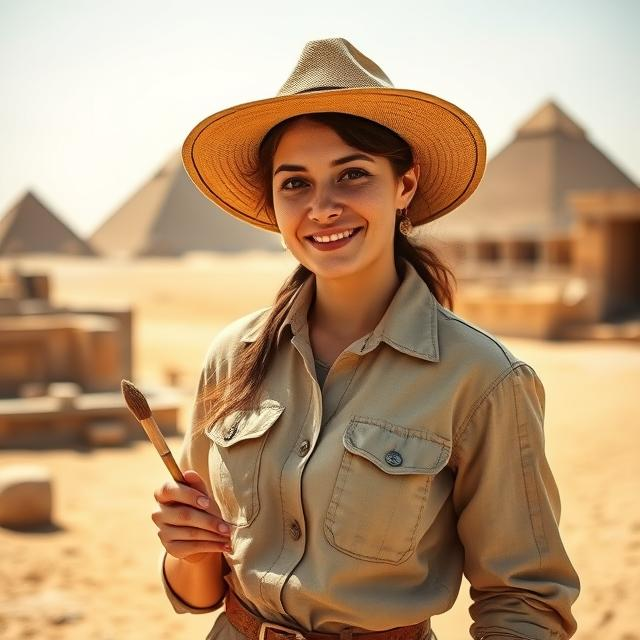
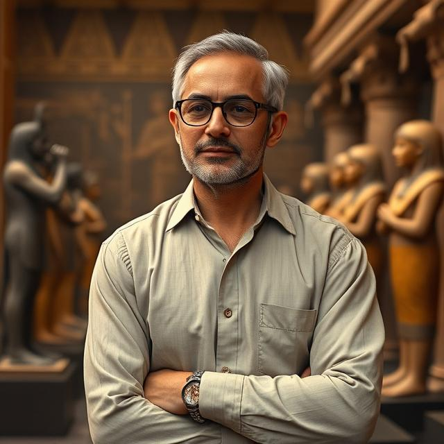
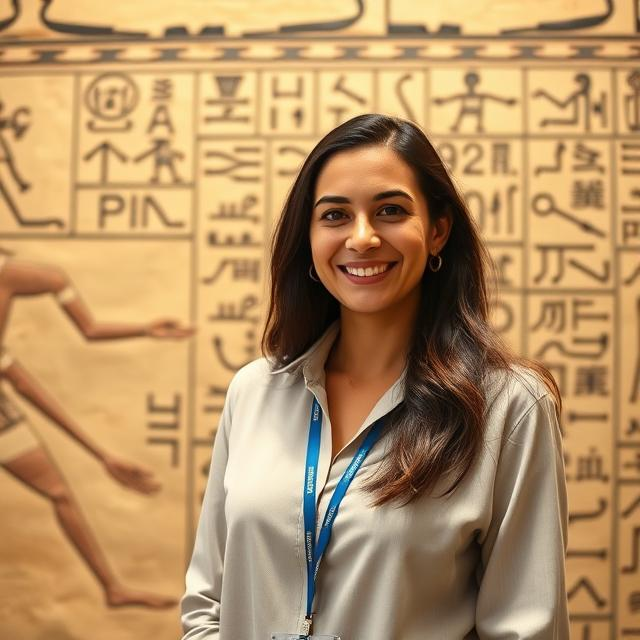

Layla Hassan
Archaeologist
Subject Matter Expertise:
Archaeologist specializing in New Kingdom Egyptian artifacts (tools, pottery, temple carvings)Professional Bio:
Layla Hassan holds a PhD in Archaeology from Cairo University under the mentorship of Dr. Amira El-Sayed. She has over 10 years of field experience excavating sites in Luxor and the Valley of the Kings. Layla is skilled in cataloging, 3D scanning artifacts, and conducting GIS mapping for digs. She uses drones, LIDAR, and digital field notebooks to record and preserve finds. Meticulous and patient, she balances fieldwork with research publications. She is particularly fascinated by funerary artifacts and temple carvings, believing they reveal the daily and spiritual lives of ancient Egyptians.Museum Role:
Leads field excavations and documents artifacts for the museum collection.Special Considerations:
Awarded the Luxor Archaeological Fellowship; fluent in Arabic and English; advocates for ethical excavation and preservation of ancient sites.

Omar El-Tayeb
Anthropologist
Subject Matter Expertise:
Physical Anthropologist studying human remains, burial practices, and skeletal analysisProfessional Bio:
Omar El-Tayeb holds a Masters in Physical Anthropology from Alexandria University. He specializes in studying skeletal remains and mummified individuals to reconstruct ancient Egyptian lifestyles. Omar uses osteological analysis, radiography, and digital reconstruction software to interpret past cultures. Known for his analytical and meticulous approach, he collaborates closely with archaeologists to contextualize findings. He has authored several papers on burial rituals and daily life in Thebes. Omar enjoys teaching museum interns about anthropological methods and ancient Egyptian societies.Museum Role:
Analyzes skeletal and burial artifacts to provide context for museum exhibits.Special Considerations:
Has a background in bioarchaeology; passionate about community education and ethical display of human remains; multilingual (Arabic, English, French).
